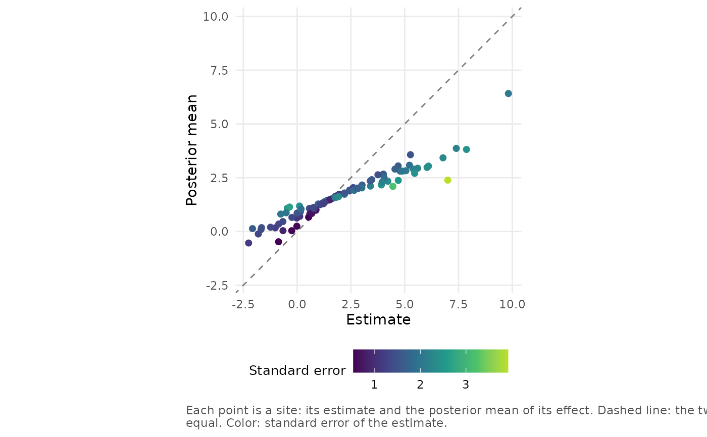
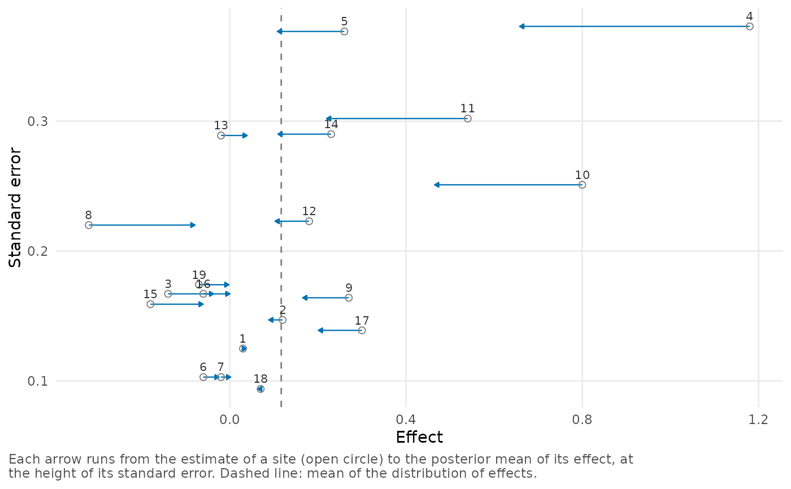
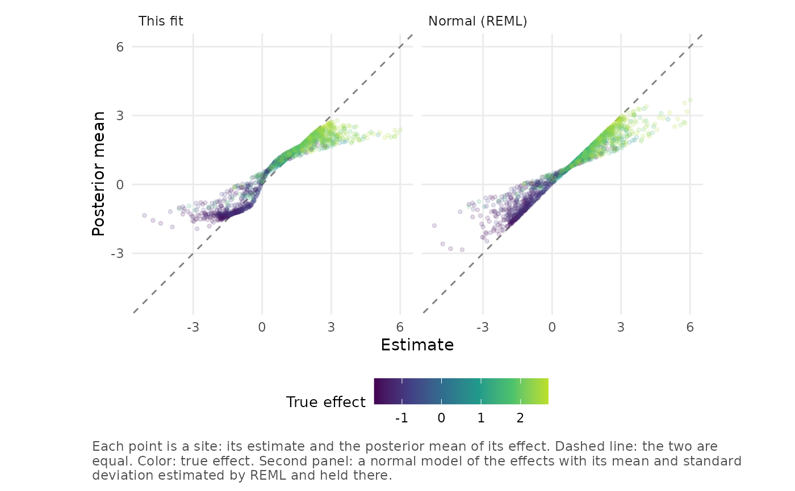

The shrinkage of a site is the difference between its estimate and the
posterior mean of its effect. plot_shrinkage() shows it by plotting
the posterior means against the estimates. An imprecise estimate far
from the values supported by the estimated distribution of effects is
shrunk strongly toward them, while a precise estimate is hardly changed.
Arguments
- x
A
bef_fitobject created bybayes_efron_fit().- style
One of
"scatter"(the default) for a scatterplot of posterior means against estimates, or"arrows"for an arrow from the estimate to the posterior mean of each site.- color_by
Variable shown by the color of a site:
"sigma"(the default) for the standard error,"truth"for the true effect specified intruth, or"none". Iftruthis specified andcolor_byis not, the color shows the true effects.- normal
If
TRUE, a panel is added for the normal random-effects model fitted to the same estimates by restricted maximum likelihood. Can also be a numeric vectorc(mean = , sd = ), which adds a panel for the normal model with that mean and standard deviation.- highlight
Sites to show in a different color and to label, specified as a numeric vector of positions in the data or a character vector of site labels. If
NULL(the default), no site is highlighted.- truth
An optional numeric vector with the true effect of every site, for simulated data.
- scale
Positive number by which the effects are multiplied in the plot, e.g.,
scale = 100to show differences in proportions as percentage points.- ...
These dots are for future extensions and must be empty.
Details
In the scatterplot (style = "scatter"), each site is a point with its
estimate on the horizontal axis and its posterior mean on the vertical
axis. The two axes have the same scale, and the color of a point shows
the standard error of its estimate. A point on the dashed diagonal has
not been moved, and the vertical distance of a point from the diagonal
is the shrinkage of the site.
In the arrow plot (style = "arrows"), each site is an arrow from its
estimate to its posterior mean, plotted at the height of its standard
error, so color is not needed to show the standard error. Sites are
labeled if there are 30 or fewer. If there are more than 100 sites, the
arrows have no heads and a point marks the posterior mean.
If truth is specified, the color shows the true effects unless
color_by is set, and style = "arrows" also marks them with crosses
if there are at most 100 sites. In both styles, the points and arrows
are semi-transparent if there are more than 100 sites, so that regions
where they overlap appear darker.
The panel added by normal shows the same plot for a normal
random-effects model: the mean of each effect given its estimate. These
are plug-in means, i.e., the mean and the standard deviation of the
model are fixed at their estimates. The normal model shrinks every
estimate toward a single mean, by a fraction that depends only on the
standard error. This package's model instead shrinks an estimate toward
the values supported by \(g\).
Examples
# The callback gaps in percentage points: imprecise estimates far from
# the bulk are shrunk the most.
plot_shrinkage(krw_fit, scale = 100)

# The arrows style, for 19 studies.
plot_shrinkage(raudenbush_fit, style = "arrows")

# Simulated sites with two groups of true effects, with a panel for the
# normal model.
plot_shrinkage(twin_towers_fit, normal = TRUE, truth = twin_towers$theta_true)
